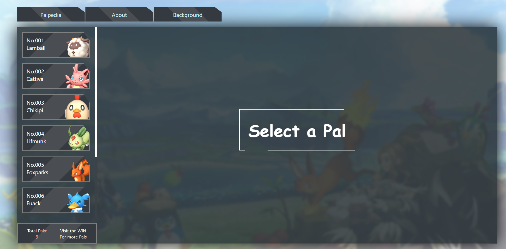

Don Ang
.Hack Training Executive Exco Candidate
A little about myself

Graduated in 2022
Passionate in building and teaching
Applying for the role:
Training & Curriculum Director
Technology & Google Developer Student Club (GDSC) Director
Why Training?

What's in it for .Hack?
New initiatives and workshop ideas
Maintaing the .Hack Resource Repository
Collaborating with other depts on events
Why Tech?
Why Tech?

Contributions


What's in it for .Hack?
Maintaining projects
Initiate new projects
Afterthought